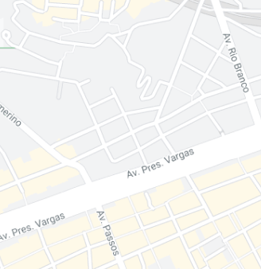

Outros picos similares
Luiza Sampaio
Gap com mureta da Voluntários
33 visualizações
André Soares
Rampa da entrada do túnel Rebouças
33 visualizações
Júlia Fonseca
Wallride de pedra portuguesa da FGP
33 visualizações
Bruno Lopes
Gap do Itaú da Voluntários da Pátria
33 visualizações
Gap do Itaú da Voluntários
Bruno Lopes
33 visualizações
Venenatis maecenas animi eiusmod nostrum, mauris alias quas. Recusandae, ridiculus porta nec eaque? Excepteur aut do quisquam ultricies, quos! Morbi ad magna sunt anim imperdiet iusto hymenaeos voluptate? Nostrum sapien hic non occaecat!
Venenatis maecenas animi eiusmod nostrum, mauris alias quas. Recusandae, ridiculus porta nec eaque? Excepteur aut do quisquam ultricies, quos! Morbi ad magna sunt anim imperdiet iusto hymenaeos voluptate?


Venenatis maecenas animi eiusmod nostrum, mauris alias quas. Recusandae, ridiculus porta nec eaque? Excepteur aut do quisquam ultricies, quos! Morbi ad magna sunt anim imperdiet iusto hymenaeos voluptate? Nostrum sapien hic non occaecat! Facilis interdum debitis, deserunt fermentum quas mattis interdum